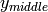
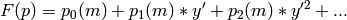
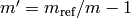
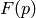
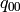
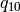
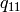
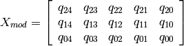
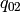

2. Polynomial Model Method¶
2.1. Description of the Spectrograph Model principle¶
The principle employed in the development of this pipeline relies heavily on a polynomial principle for all the modelling of the spectrograph’s characteristics from the data. These include the location of the orders, the wavelength scale and the reciprocal model that converts the sampled slit from the slit viewer to its image on the spectrograph CCD.
The idea is that instead of a traditional empirical extraction where the orders are “scanned” for their location and arc lines are detected blindly, we form a model of the spectrograph and fit the parameters using the flat fields and arcs to measure small changes in the spectrograph on a nightly basis. Then, the extraction process becomes relatively trivial with knowledge of where all the flux is and the wavelength scale is uniquely determined. A simple advantage of this method is that the entire spectrograph is modelled as one, instead of each individual order as a separate entity. Ultimately, measurements such as radial velocity shifts can be determined using a single varying parameter, as opposed to a combination of measured shifts in all orders.
The principle implemented is that of a sum of polynomials of polynomials. This differs from an approach where each physical parameter of the spectrograph is modelled individually and focusses on a series of coefficients that represent various aspects of the CCD images. We thereby minimise the number of required parameters that describe the data.
2.2. Mathematical principle¶
The polyfit method uses files containing polynomial coefficients where each line
is the coefficients for the polynomials as a function of order, which are then combined
as a function of y position on the CCD chip, defined as the CCD pixel numbers in the
spectral direction.
For mathematical convininence and correspondence with a testable reference, the polynomials are evaluated with respect to a reference order , defaulting as whatever order number is in the middle of the range used for each arm, and as a function of the middle pixel on the chip .
The functional form is:

with  , and:
, and:

with 
In this functional form,  is whatever aspect we wish to model. In the specific example of GHOST, it will be the x position (defined in the spatial direction) in the first instance, but this same method is then used for the wavelength scale, and all three aspects of the slit image on the chip (spatial direction magnification scale, spectral direction magnification scale and rotation), all of which are expected to change as a function of order and position along the order.
This means that the simplest wavelength scale spectrograph model should have:
-  : central wavelength of order m_ref
: central wavelength of order m_ref
-  : central_wavelength/R_pix, with R_pix the resolving power / pixel.
-  : central_wavelength/R_pix, with R_pix the resolving power / pixel.
... with everything else approximately zero.
Please note that the order of polynomials is left undefined. The code that handles these parameters is identical and left generalised since each aspect (x position, wavelength, etc) may require a different number of variables to fully describe the problem.
2.3. Description of model file contents¶
In the case of the x position, using default file xmod.fits, the contents of this file are as follows:
(1)¶
The non standard way to define the variables within the files and imported array is related to the way numpy’s poly1d function takes inputs, with the highest order coefficient first.
In the case of x position, the coefficients represent:
- : x position of the middle of the reference order.
-  : quadratic term coefficient for order spacing
- : common rotation term for all orders
- : linear term coefficient for order rotation
: quadratic term coefficient for order rotation
: common curvature term for all orders
: linear term coefficient for order curvature
: quadratic term coefficient for order curvature
... with everything else approximately zero.